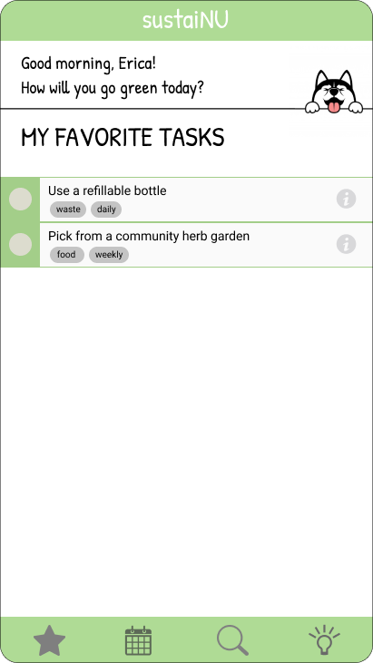
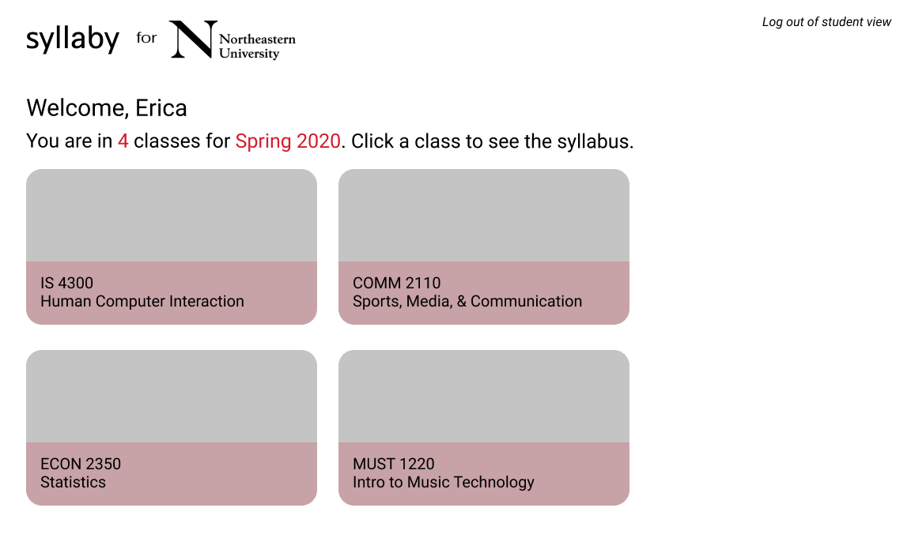
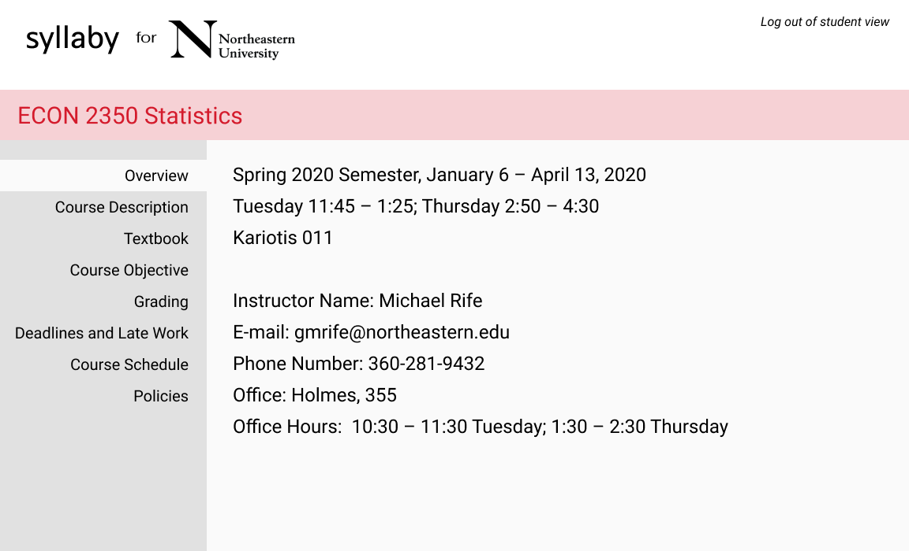
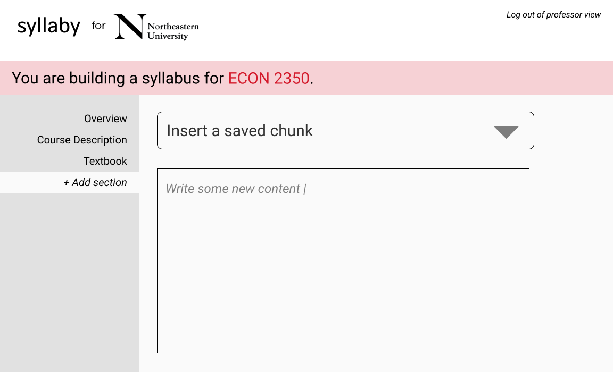

Northeastern touts its commitment to environmental sustainability as shown through facilities, dining practices, research and class curricula requirements. However, in my daily life as a student, I’m unaware of many ways I can make everyday habits and actions more sustainable. Our campus is filled with opportunities to recycle and fill reusable water bottles. But even if these practices are readily available, it doesn’t mean people use them regularly. I still see students dump all their waste into the trash at Rebecca’s Cafe without taking the time to segregate them, as well as plenty of disposable water bottles around.
I propose an app that shows students eco-friendly and sustainability initiatives specific to Northeastern and student life. The app could encourage taking these actions through a gamified habit tracker. Some examples include using Northeastern’s community herb gardens, donating unwanted belongings to Trash2Treasure, using a water fountain on campus to refill a bottle, and recycling old electronics. The school has some resources about such initiatives, but much of the information is scattered around on disparate websites, as I found out when researching the topic. If the app offers clear instructions for and context on why each task is important, users may be more willing to go out of their way.
There are plenty of habit apps out there already, including a similar idea from BU, that could provide inspiration. Still, developing an interface specifically catered to Northeastern students is worthwhile in order to limit the amount of friction users must overcome to use the app effectively. Educating students about eco-friendly steps and encouraging them to take initiative benefits students by letting them know their actions make a difference, conserves school resources, and makes the world a little greener.
At the beginning of each semester, I go through each of my class syllabi and add assignments and exams to a central schedule organizer (such as Trello). This manual method is time-consuming and liable to human input error. Assignment due dates may also change, requiring revisions. I propose a syllabus builder web app that would allow professors to input content for students to use the way they want, such as transferring all the assignment dates directly to Google Calendar. Having all their course syllabi in one central online portal and format could help students work more efficiently, rather than having to download documents from Blackboard. If a professor changes an assignment, the interface could notify students and change the calendar accordingly.
From my understanding of 5 years of receiving syllabi, it seems that professors copy-and-paste a lot of the same information from year to year and class to class. Syllaby would streamline this process by allowing them to “build” a syllabus for each course by filling a template with saved content such as contact information, academic integrity policy and grading scale, and then entering new content specific to that course section, such as the assignment schedule. For both professors and students who would like hard copies of the syllabi, the app would generate printable versions as well.
This app would act as a complement to Blackboard rather than a replacement. Syllabi’s sole goal is to communicate syllabus information. It would not accept assignment submissions or even comments from students, but rather be a one-way channel from professors. I’m not sure if there’s any way to connect it with Blackboard so professors would not have to change assignment dates on both platforms, but that partnership could be explored. I envision Syllabi as a tool that would simplify presentation of class information for professors while making that content more accessible for students.
  